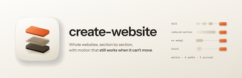
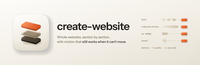
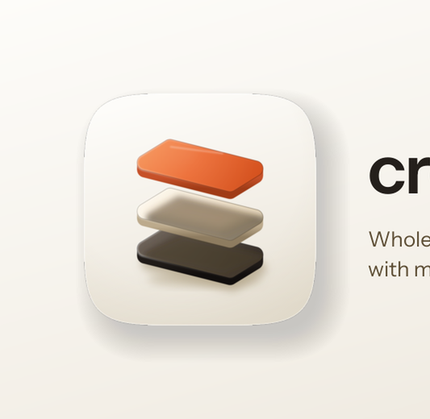

Every size a person actually meets this banner at, then the 12-point rubric. Delivery bar is 10 of 12 with checks 1, 2, 3, 7 and 12 non-negotiable. 5 of 5 mechanical checks pass and 7 still need a human verdict, which is what the renders above are for.



| # | Check | Verdict | Evidence |
|---|---|---|---|
| 1 | Exactly 3200x1040, from a 1600x520 layout at deviceScaleFactor 2 (non-negotiable) | pass | 3200x1040 |
| 2 | The plugin's real icon asset, referenced rather than redrawn (non-negotiable) | pass | 1 artwork reference inlined as a data URI, which is how a file:// render loads it at all |
| 3 | The wordmark is set in a linked web font, not a local system face (non-negotiable) | pass | loads IBM Plex Mono, Instrument Sans |
| 4 | Ground register agrees with the icon it sits beside | — | judged by eye on the renders above; fill this in |
| 5 | One warm accent, carried from the icon's own accent constant | — | judged by eye on the renders above; fill this in |
| 6 | Composition derived from the icon's build script, not eyeballed from a sibling | — | judged by eye on the renders above; fill this in |
| 7 | One essence line, no em dash (non-negotiable) | pass | no em dash in the copy |
| 8 | Nothing overflows the frame | — | judged by eye on the renders above; fill this in |
| 9 | Wordmark and essence line both legible at 900px | — | judged by eye on the renders above; fill this in |
| 10 | Wordmark legible at 400px | — | judged by eye on the renders above; fill this in |
| 11 | No element illegibly overlapping another | — | judged by eye on the renders above; fill this in |
| 12 | banner-src retained, so the banner stays editable (non-negotiable) | pass | banner-src.html |
5 / 12
# create-website banner verdict
**Ships.** 12 of 12 on the rubric, with two liabilities stated below rather than scored away. The five mechanical rows are decided by `banner_sheet.py check`; the seven below them were judged on the full render and on 1:1 crops of the icon, the wordmark, the essence line and each of the four motion rows, plus the 900px and 400px downscales.
1. **Exactly 3200x1040** — pass. `render_banner.py` read `innerWidth` back as 1600 and wrote 3200x1040 at deviceScaleFactor 2. 2. **Real icon asset** — pass. `icon.png` inlined as a data URI at 576px, which is exactly its 288px display box at DPR 2. Nothing is redrawn; a `file://` render cannot load a `file://` subresource, so inlining is the only way it loads at all. 3. **Linked web font** — pass. Instrument Sans 400/500/600 and IBM Plex Mono 400/500 from Google Fonts. The advance measured 1.206x the monospace control, which is the oracle here because `document.fonts.check()` under-reports on this engine. No local macOS face is named anywhere. 4. **Ground register agrees with the icon** — pass. Same three porcelain stops, same gradient bearing, same vignette centre and opacity as `build_icon.py`, so the icon's own tile sits on the banner without a seam. 5. **One warm accent from the icon's accent constant** — pass, with a stated derivation. The arrival plate is `SECTIONS[0]` unchanged: `#F7995F` to `#EC6A31` to `#D14E1C` on the icon's own 164deg light axis. The two mono numerals use `#A83A14`, a darkened ember rather than a constant copied out of the script, because the raw ember measures about 2.6:1 on this ground and fails at 16px while the lifted value measures 5.6:1. That is one accent in two roles, not two accents. 6. **Composition derived from the icon's build script** — pass. The derivation table is in `banner-brief.md`: ground stops and gradient angle from the `ground` gradient's own geometry, vignette from `VIGNETTE`, every shadow offset along `-LIGHT_DX,-LIGHT_DY`, palette from `SECTIONS`, row pitch against track inset holding `PITCH_HERO:PITCH_BASE`, and the icon plate's shadow distance from `THICK`. No measurement was taken off a sibling banner. 7. **One essence line, no em dash** — pass. One sentence, one explicit break after "section by section," so the bolded clause stays whole. Curly apostrophe. 8. **Nothing overflows** — pass. `render_banner.py` reported `overflow: []`. The text column ends at 1096 and the device starts at 1132. 9. **Wordmark and essence line legible at 900px** — pass, checked on the downscale rather than asserted. Both read cleanly; the mono labels survive too, which was not required. 10. **Wordmark legible at 400px** — pass, checked on the downscale. "create-website" is fully readable and the icon's three bands still separate. 11. **No illegible overlap** — pass, after a fix. The first render's trail used three 46px ghosts at 36px spacing, which merged into one blurred bar with two lumps and read as a smudge rather than as three steps. They are now 26px at 42px spacing, and the reduced-motion ramp was shortened from 140 to 128 so it no longer abuts the arrival plate. 12. **banner-src retained** — pass. `banner-src.html` sits beside this file with the derivation written into its comments.
## Known liabilities
The mono labels are 16px and become texture below roughly 700px of displayed width. At the catalogue's 400px the right third reads as four quiet rows with four ember marks, which is the intended fallback rather than a failure, but anyone relying on those four words to carry the claim should know they are gone by then.
The device asserts four motion paths. That is true of the skill as built, and if the skill ever drops one of `full`, `reduced-motion`, `no webgl` or `touch`, this banner becomes a claim the product no longer backs. It is the one element here that can go stale without anything rendering differently.